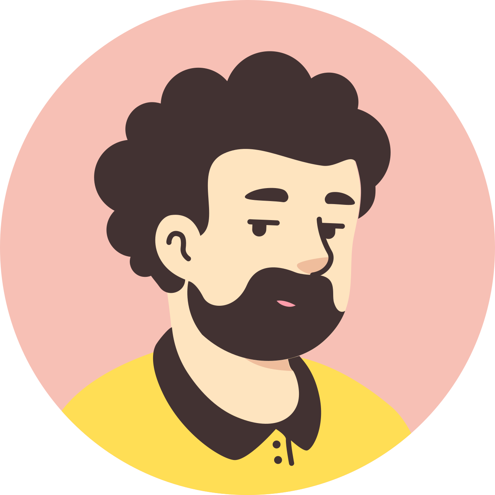

Finalmente conseguimos identificar que John de fato sofre bullying e que tipo de bullying ele sofre,
agora podemos ajudar o John a superar o Cyberbullying.
Pensando especificamente no caso do John, ajude o Ethan a selecionar qual é o melhor conselho parar dar para o John.
A. Bloquear o bully na rede social, reportar o post e falar com um adulto
B. Aceitar a sua realidade e sofrer em silencio
C. Hackear o bully e se vingar dele postando coisas ruins sobre ele
D. Ofender o bully de volta
Responder